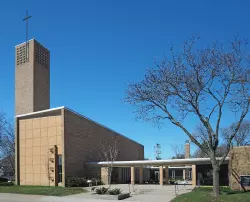

Kleinhans Music Hall, Buffalo
1938

Christ Church Lutheran, Minneapolis

1948
Kresge Auditorium et chapelle du MIT, Cambridge
1956

En savoir plus
Bell Labs Holmdel Complex, Holmdel
1962

Terminal de l'aéroport international de Washington-Dulles
1962

En savoir plus
North Christian Church, Columbus
1964

En savoir plus
Gateway Arch, Jefferson National Expansion Memorial, Saint-Louis
1965

En savoir plus